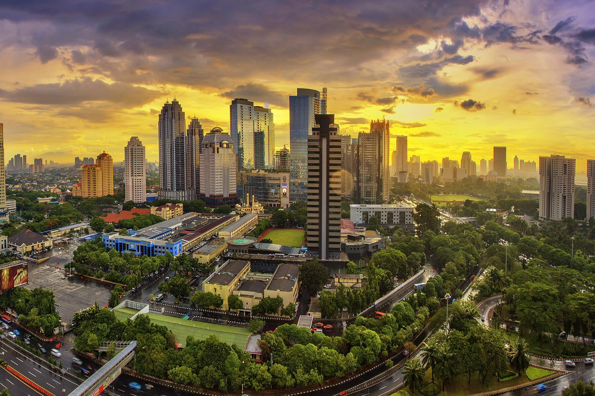
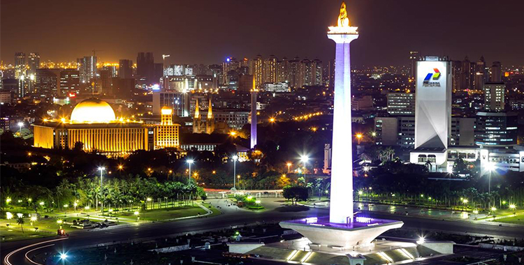
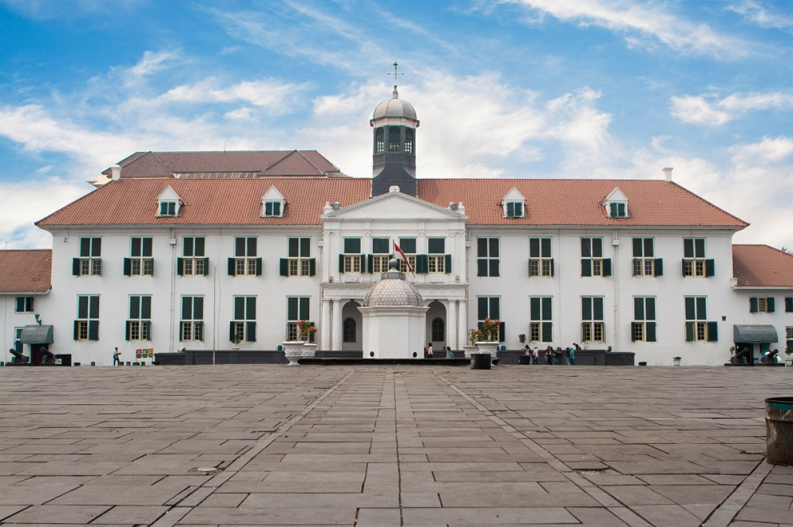

Sejarah

Daerah Khusus Ibukota Jakarta (DKI Jakarta) adalah ibu kota negara dan kota terbesar di Indonesia. Jakarta merupakan satu-satunya kota di Indonesia yang memiliki status setingkat provinsi. Jakarta terletak di pesisir bagian barat laut Pulau Jawa. Dahulu pernah dikenal dengan beberapa nama di antaranya Sunda Kelapa, Jayakarta, dan Batavia. Di dunia internasional Jakarta juga mempunyai julukan J-Town, atau lebih populer lagi The Big Durian karena dianggap kota yang sebanding New York City (Big Apple) di Indonesia.
Sebagai pusat bisnis, politik, dan kebudayaan, Jakarta merupakan tempat berdirinya kantor-kantor pusat BUMN, perusahaan swasta, dan perusahaan asing. Kota ini juga menjadi tempat kedudukan lembaga-lembaga pemerintahan dan kantor sekretariat ASEAN. Jakarta dilayani oleh dua bandar udara, yakni Bandara Soekarno–Hatta dan Bandara Halim Perdanakusuma, serta tiga pelabuhan laut di Tanjung Priok, Sunda Kelapa, dan Ancol.
Geografis

Jakarta berlokasi di sebelah utara Pulau Jawa, di muara Ciliwung, Teluk Jakarta. Jakarta terletak di dataran rendah pada ketinggian rata-rata 8 meter dpl. Hal ini mengakibatkan Jakarta sering dilanda banjir. Sebelah selatan Jakarta merupakan daerah pegunungan dengan curah hujan tinggi. Jakarta dilewati oleh 13 sungai yang semuanya bermuara ke Teluk Jakarta. Sungai yang terpenting ialah Ciliwung, yang membelah kota menjadi dua. Sebelah timur dan selatan Jakarta berbatasan dengan provinsi Jawa Barat dan di sebelah barat berbatasan dengan provinsi Banten.
Kepulauan Seribu merupakan kabupaten administratif yang terletak di Teluk Jakarta. Sekitar 105 pulau terletak sejauh 45 km (28 mil) sebelah utara kota.
Wisata
Jakarta merupakan salah satu destinasi wisata yang cukup baik di Indonesia. Untuk meningkatkan jumlah wisatawan yang berkunjung ke Jakarta, pemerintah mengadakan program "Enjoy Jakarta". Beberapa tempat pariwisata yang terkenal dan biasa dikunjungi oleh para wisatawan lokal dan mancanegara di antaranya adalah Taman Mini Indonesia Indah, Pulau Seribu, Kebun Binatang Ragunan, dan Taman Impian Jaya Ancol (termasuk taman bermain Dunia Fantasi dan Seaworld Indonesia). Disamping itu Jakarta juga memiliki banyak tempat wisata sejarah, yakni berupa museum dan tugu. Diantaranya adalah Museum Gajah, Museum Fatahillah, dan Monumen Nasional. Disamping tempat wisatanya yang memadai, saat ini di Jakarta telah tersedia sekitar 219 hotel berbintang, 3.173 restoran, dan 40 balai pertemuan. Hampir semua jaringan hotel kelas dunia telah membuka gerainya di Jakarta, seperti JW Marriott Jakarta, The Ritz-Carlton Jakarta, Shangri-La Hotel, dan Grand Hyatt Jakarta.
Monumen Nasional

Monumen Nasional atau yang populer disingkat dengan Monas atau Tugu Monas adalah monumen peringatan setinggi 132 meter (433 kaki) yang didirikan untuk mengenang perlawanan dan perjuangan rakyat Indonesia untuk merebut kemerdekaan dari pemerintahan kolonial Hindia Belanda. Pembangunan monumen ini dimulai pada tanggal 17 Agustus 1961 di bawah perintah presiden Sukarno dan dibuka untuk umum pada tanggal 12 Juli 1975. Tugu ini dimahkotai lidah api yang dilapisi lembaran emas yang melambangkan semangat perjuangan yang menyala-nyala. Monumen Nasional terletak tepat di tengah Lapangan Medan Merdeka, Jakarta Pusat.
Museum Fatahillah

Museum Fatahillah memiliki nama resmi Museum Sejarah Jakarta adalah sebuah museum yang terletak di Jalan Taman Fatahillah No. 1, Jakarta Barat dengan luas lebih dari 1.300 meter persegi.
Bangunan ini dahulu merupakan balai kota Batavia (bahasa Belanda: Stadhuis van Batavia) yang dibangun pada tahun 1707-1712 atas perintah Gubernur-Jendral Joan van Hoorn. Bangunan ini menyerupai Istana Dam di Amsterdam, terdiri atas bangunan utama dengan dua sayap di bagian timur dan barat serta bangunan sanding yang digunakan sebagai kantor, ruang pengadilan, dan ruang-ruang bawah tanah yang dipakai sebagai penjara. Pada tanggal 30 Maret 1974, bangunan ini kemudian diresmikan sebagai Museum Fatahillah.